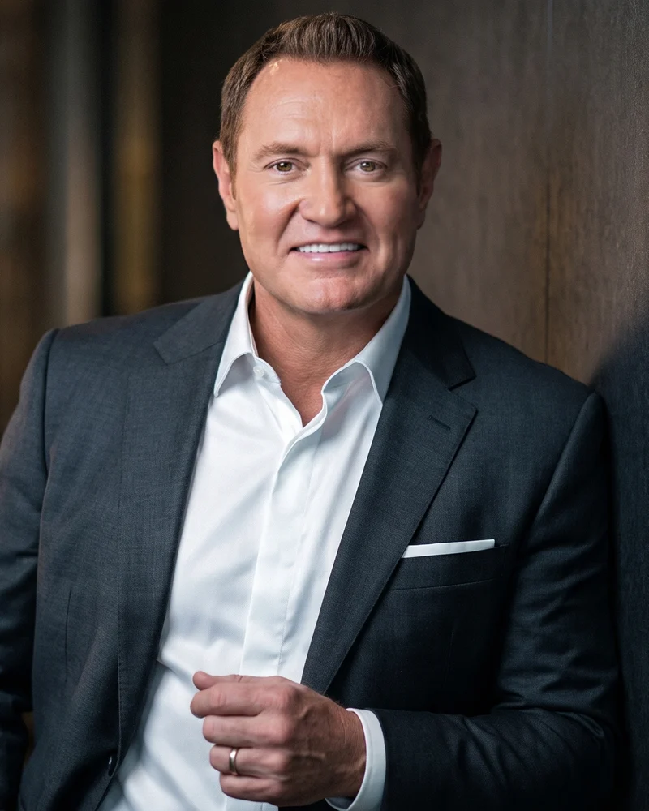
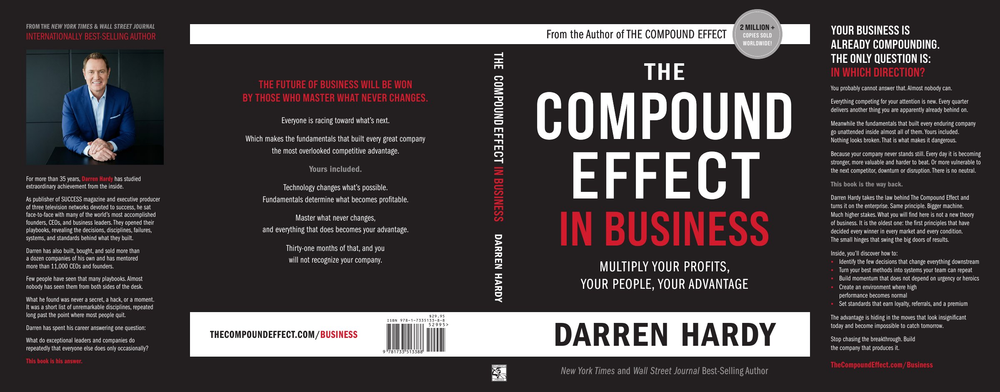

Darren Hardy, LLCBrand & Design System

Brand &
Design System
The visual system for The Compound Effect in Business, taken from the printed jacket and the pages and trailer built for the launch: marks, colour, type, components and web standards.
Governs every TCEB asset, print and webV1.0 · October 2026
01Logo
The Lockup
The primary identity is the title lockup as printed on the jacket: THE, COMPOUND and EFFECT stacked, with IN BUSINESS in red on its own line. It is artwork cut from the jacket file, not type. Use the supplied files only; never retype it.
White · on black and photographic grounds
Clear space & minimum size
Keep clear space on all four sides equal to at least the cap height of COMPOUND. Minimum width: 160 px on screen, 1.25 in in print, so THE stays legible. Below that, set the title as one line of text. Artwork is 1600 px wide, cut at 600 dpi from the jacket.
Do
- White on black or photographic grounds.
- Black on white grounds.
- Keep IN BUSINESS red, smaller than EFFECT, on its own line.
- Preserve proportions and clear space.
Don't
- Retype it in any face, the stand-in Bebas Neue included.
- Turn COMPOUND or EFFECT red or gold.
- Stretch, condense, rotate, outline or add shadows.
- Place it on mid-grey, cream or tinted grounds.
- Set it at equal weight with DARREN HARDY in one view.
02Logo · Variants
Logo Variants & Parent Brand
Four units in a fixed order: author, franchise, book. The lockup is the identity. The franchise lockup carries the equity of two million copies. His name is set as the jacket sets it, and the DH mark closes every page.
In Business lockup · primary identity

The Compound Effect · franchiseAuthor name · jacket band
 DH parent mark · footer
DH parent mark · footer

Author image
The jacket's back-flap photograph is the approved image of Darren for TCEB. It is also in Air. A rectangle only: never a circle, a cut-out or a new background. He sits on his own charcoal wall. On a black hero, fade the photo into black from the copy side (as on the launch pages) so he and the headline share one field.
Air · DH GO-TO PICS · dh_studio_royal_1 · 1856 × 2304
Full-resolution file · Open the board in Air
Hierarchy rule
The lockup leads in the hero. The DH mark sits in the footer. His name in Franklin appears only in byline positions. Two units never share one view at equal weight.
File naming
tceb-lockup-white.png · primary, on dark
tceb-lockup-black.png · primary, on white
tce-lockup-white/black.png · franchise
dh-name-black/white.png · author name
dh-mark-white/dark.webp · parent mark
03Color
Color System
Two hard grounds, one red, and a gold that never leaves the dark. The jacket is pure black against pure white, and the hardness of that edge is the identity. No creams, no tinted paper, no third ground.
RED ON WHITE
The book. White owns the book, every primary CTA, the argument and the moneylines.
GOLD ON BLACK
The dark register. On black, gold is the accent: the solid button, big numbers, stars, the glow. #D4A017 never crosses onto white.
The rule that governs every page: the jacket is black, so a book page cannot be. Put the black book on white and it lands; put it on black and it disappears. That is also why the trailer ends on white.
The accent
Red#E1132E
on white
Red bright*#FF0047
type on black
Print redC12 M100
Y92 K3
Gold†#D4A017
black only
Gold lux†#CAA76A
softer register
White#FFFFFF
ground
*Red bright is type only, never a button fill (white on it is 3.93:1). †Gold lives on black only: 2.38:1 on white fails at every size. Print red is the jacket's process build; the screen reds are matched for contrast, not converted from it.
Neutrals
Black#000000
web ground
Jacket blackK100 · #231F20
print
Ink#262626
body on white
Grey#6E6E6E
fine print
Silver#B3B3B3
body on black
Field#F0F0F0
callouts only
Greys are type tiers and rules, not grounds. The one surface allowed is Field, behind a callout or spec table. The copy seal is jacket grey #A7A5A6 and appears nowhere else.
Accessibility
Red on white 4.85:1 and red bright on black 5.34:1 both carry body text. #E1132E on black is 4.33:1, large type only. Gold on black 8.84:1. Gold beside red at the same size vibrates (only 1.65:1 apart): separate them by size, weight or space. One red per view; long stretches with no colour are what make it land.
04Typography
Typography
Read off the jacket file, not assumed. Two families, used the way the jacket uses them: Bebas Neue Pro for the title, ITC Franklin Gothic for his name and the reading copy. On screen, Inter carries body and UI. Hierarchy comes from width, weight and size. Every title sample below is cut from the jacket itself.
Title
Bebas Neue Pro SemiExpanded Bold · UPPER · tracked open
Hero word
Bebas Neue Pro Expanded Bold · EFFECT only
The tail
SemiExpanded Bold · red · about half the size of EFFECT
Author name
ITC Franklin Gothic Std Demi Condensed · his name only
Subtitle & flap copy
ITC Franklin Gothic Std Book Compressed · Demi Compressed for flap emphasis
Web body & UI
Inter 400 / 600 / 700 · sentence case
Your business is already compounding. The only question is: in which direction?
Licence status · open
The files the designer sent are Bebas Neue (2010, not Pro) and Franklin Gothic Book and Medium (not the ITC Condensed and Compressed cuts). That is why the web pages have never matched the jacket. The exact cuts above went to DH on 4 Oct 2026 for a Desktop licence (MyFonts; ITC Franklin is also on Adobe Fonts). Until they are installed, the lockup and his name ship as artwork, web headlines use Bebas Neue Bold as a stand-in, and nothing is retyped to imitate the jacket.
Web type scale
| Role | Face | Weight | Size | Line | Tracking | Case |
|---|
| Display (one per page) | Bebas Neue Pro SemiExp | Light → Bold | clamp(42–96px) | 0.94 | 0.02em | UPPER |
| Section | Bebas Neue Pro SemiExp | Bold | clamp(32–60px) | 0.98 | 0.02em | UPPER |
| Card / tier (Bebas floor) | Bebas Neue Pro SemiExp | Bold | 28–34px | 1.0 | 0.03em | UPPER |
| Lede / body | Inter | 400 | 17–20 / 17px | 1.62 / 1.72 | 0 | Sentence |
| Label / button / tag | Inter | 700 | 11–14px | 1.3 | 0.08em | UPPER |
| Fine print | Inter | 400 | 12px | 1.55 | 0 | Sentence |
Weight range, not one weight: Light carries the setup, Bold lands the one line that must land. Bebas never below 28px: it turns spindly, so labels and buttons are Inter 700. ALL CAPS: eight words maximum, six preferred. Franklin Demi Condensed is for his name only.
05Buttons & Marks
Buttons & UI Marks
Two CTA styles. Uppercase Inter 700, 4 px radius, one primary action per view. On white the solid is red; on black the solid is gold with black type.
Get on the list →Solid · red fill, white type. A soft neutral shadow, no darker edge.
See the book →Ghost · ink outline and type. Fills ink on hover, type flips white.
Recurring marks
The small repeated elements that carry the brand. There is no icon library; these are the signatures.
Play buttons
White · on photo or video
Every play button is a disc with a soft halo ring in its own colour that grows on hover. Pick the colour by ground, as with the CTAs. Video never loads with the page: the play opens a lightbox, the player is created on click and removed on close (youtube-nocookie, Vimeo dnt=1).
Button states · black ground
Watch the trailer →Default
→
Watch the trailer →Hover · grows, lifts
→
The scheduleHover · fills white
Button states · white ground
→
Get on the list →Hover · grows, lifts
→
See the bookHover · fills ink
Nothing darkens on hover. A solid holds its fill: it grows about 4%, lifts 3 px and the arrow travels. A ghost fills with its own type colour and flips the type to the ground.
06Components
Components & Treatments
The repeatable building blocks, as built on the launch pages and in the trailer.
The jacket · R4, full spread

Back flap, back panel, spine, front, front flap. The source of every mark, colour and face in this guide. File: TCEB-Cover-R4-Jacket.pdf, page 1 (the red version).
Rating lockup · Amazon
4.7/5
★★★★★
21,518 Amazon ratings
The Compound Effect
4.7/5
★★★★★
21,518 Amazon ratings
The Compound Effect
Always name the source and the book: these are the 2010 book's ratings and never attach to TCEB's own claims. Read 4 Oct 2026; re-check before each use. Stars: ink-gold #A87F12 on white, gold on black.
Credential band · gold on black
35+
Years studying
achievement
11,000+
CEOs and
founders mentored
2M+
Copies of The
Compound Effect
Credentials stay open-ended (the book has to read true in 2036). Numbers count up once on entry.
The glow · background only
A warm gold pool rising from below, on black only. In the trailer it is the audience: it starts on "you" and grows as they speak.
Elevation
Borders over shadows on cards. Real shadows only under objects (the book, a solid button's lift). 4 px radius; circles only for play buttons and the seal.
Motion & the book
Arrivals rise 38 px over 0.9 s. Black to white is the signature transition, and the pace compounds toward the reveal. The book is a real hardback that always faces the copy.
07Web
Web Implementation
The tokens to build from. Reference variables; never hard-code raw hex inside a component. The live tceb.css still carries the pre-jacket red #E02826: swap it for #E1132E on its next pass.
/* Design tokens. The :root every TCEB page reads */
:root {
/* grounds */
--c-white:#ffffff; --c-black:#000000; --c-ink:#141414; --c-surface-d:#131313;
/* zone 1, the book: red. one per view */
--c-red:#e1132e; --c-red-bright:#ff0047; /* bright = type on black only */
/* the dark register: gold. black grounds only */
--c-gold:#d4a017; --c-gold-lux:#caa76a; --c-gold-ink:#8a6300; /* only gold allowed on white */
/* type. Pro + ITC once licensed; stand-ins stay as fallbacks */
--font-display:'Bebas Neue Pro','Bebas Neue','Oswald',sans-serif;
--font-name:'ITC Franklin Gothic Std','Archivo Narrow',sans-serif;
--font-body:'Inter',-apple-system,'Segoe UI',sans-serif;
--radius:4px; --container:1080px; --gutter:32px;
}
Layout & spacing
Container max 1080 px; side gutter 32 px desktop, 20 px mobile. Sections breathe at 120–160 px on desktop; a uniform 72 px on mobile. Mobile is its own design: sticky bottom action bar, bottom-sheet modals, snap-scrolling card rails, 44 px touch targets.
Accent logic (load-bearing)
Red on white, gold on black. Components never hard-code a ground: they read --fg, --surface, --accent, which flip inside .ground-black and .on-dark.
Accessibility
Body at 4.5:1 or better. Visible focus, real alt text, prefers-reduced-motion honoured. Scroll reveals must leave everything visible if the observer never fires.
Performance
Self-host every font as woff2 (no Google Fonts, no CDN). WebP, sized to at most 2× its rendered box. Lazy-load below the fold. Video only on click. Every page noindex until it launches.
Any black section
Black ground, gold accent. Add the dark class to the section, never only a dark background (that gives dark-on-dark type).
.ground-black, .on-dark { /* black ground, gold accent */
--bg:var(--c-black); --fg:var(--c-white); --accent:var(--c-red-bright); --gold-type:var(--c-gold);
}
em { font-style:normal; color:var(--accent); } /* gold em on black */
08Type
Emphasis & Word Craft
How words earn weight without italics. Two mechanics only: a colour shift and a weight shift. Both apply at headline and body size.
Rule 1 · Never italics
The <em> element marks emphasis semantically; its italic is overridden. The one inherited exception is publication names in fine print, as the jacket sets New York Times.
Rule 2 · One colour shift per headline
Emphasis renders red on white, red bright on black, and gold where the section is black. One per headline, one per view where possible. The jacket spends its red on a single phrase per surface; that discipline is why it lands.
Rule 3 · Light sets up, bold answers
The weight shift carries the argument. The setup is light; the answer is bold. Proven in the trailer: the question types in light and the turn lands in bold.
WHAT ABOUT MY BUSINESS?
Rule 4 · The red period
A short statement may end on a red full stop. It is the smallest dose of the accent, so it can sit on a line that already has no other colour. Never alongside a red word in the same line.
IT COMPOUNDS.
Rule 5 · Punctuation outside the em
<em>In Business</em>. not <em>In Business.</em> When two phrases share a connector, each gets its own em and the connector stays neutral. The red period is the only punctuation that is coloured, and it is the em.
Rule 6 · The copy rules travel with the type
- No em dashes, anywhere, comments included.
- Customers invest. Transaction verbs never appear.
- "Leader," not "owner." Never open on the reader's problem.
- ALL CAPS: eight words maximum.
- Credentials stay open-ended: "more than 35 years," never an exact count.
- Never promise a number, a growth rate or a timeline.
Brand term protection · .nobreak
Multi-word marks never break across lines: The Compound Effect, IN BUSINESS, Darren Hardy, BMC|COLLECTIVE.
em { font-style:normal; color:var(--accent); } /* colour only, never slant */
.answer { font-weight:700; } .setup { font-weight:300; }
.stop { color:var(--accent); } /* <span class="stop">.</span> */
.nobreak { white-space:nowrap; }
09UI
CTA System
Two button variants share identical dimensions and motion; only the paint differs. Use them deliberately, based on what the moment asks of the visitor.
.btn-solid · demands action
Filled: red with white type on white grounds, gold with black type on black. One flat fill, lifted by a soft neutral shadow. The primary or closing CTA, one per view: the final commit point of a page.
.btn-ghost · invites without pressure
Outlined in the ground's type colour. On hover it fills with that colour and the type flips to the ground. For the nav and secondary slots, where presence matters more than the click.
/* Shared dimensions, font, padding, motion */
.btn-solid, .btn-ghost {
display:inline-flex; align-items:center; gap:14px;
padding:20px 36px; border-radius:var(--radius); border:1.5px solid transparent;
font-family:var(--font-body); font-weight:700; font-size:13px;
letter-spacing:.08em; text-transform:uppercase; text-decoration:none;
transition:transform .22s cubic-bezier(.2,.8,.2,1), box-shadow .22s;
}
/* Only the paint differs. The fill never changes on hover. */
.btn-solid { background:var(--c-red); color:#fff; box-shadow:0 10px 22px rgba(0,0,0,.16); }
.on-dark .btn-solid { background:var(--c-gold); color:#000; box-shadow:0 10px 22px rgba(0,0,0,.5); }
.btn-solid:hover { transform:translateY(-3px) scale(1.04); }
.btn-solid:active { transform:translateY(5px); transition-duration:60ms; }
.btn-ghost { background:transparent; color:var(--fg); border-color:var(--fg); }
.btn-ghost:hover { background:var(--fg); color:var(--bg); }
/* The arrow travels on both */
.btn-solid .arw, .btn-ghost .arw { transition:transform .22s; }
.btn-solid:hover .arw, .btn-ghost:hover .arw { transform:translateX(6px); }
A page can host both: a ghost in the nav (a low-pressure invite) and a solid at the close (the actual decision). Never two solids in one view, never a coloured glow under a button (a blurred red shadow reads pink), never a pill shape, and never a label in Bebas at button size.
Note on the live stylesheet
tceb.css still darkens .btn-red on hover (to --c-red-deep). That predates the rule above and should be brought into line on the next pass of the stylesheet.
Every asset that carries this title should feel as deliberate, hard-edged and certain as the jacket it comes from. When in doubt: a white ground, the black book, one red.
© Darren Hardy, LLC · Brand & Design System V1.0